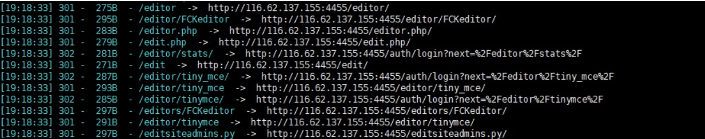
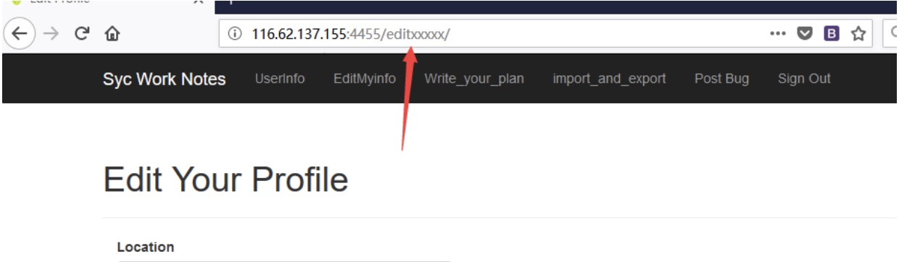
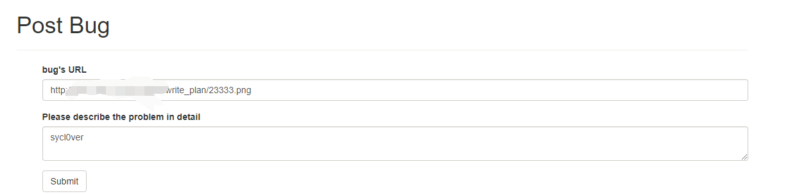
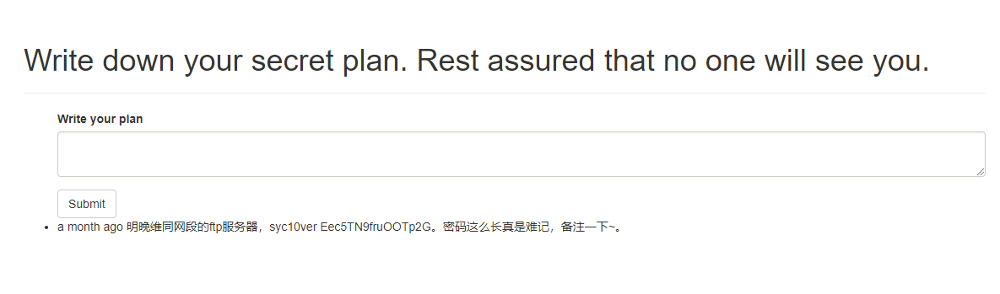
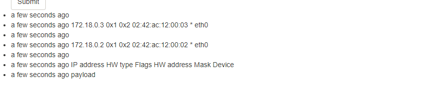
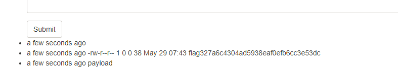
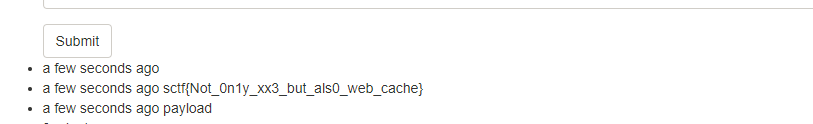

第一步，web缓存漏洞
完成一步需三个点结合。
第一点：
观察到static有存在目录穿越漏洞，虽然没开autoindex但依然可以通过/static../etc/passwd下载文件。结合提示从nginx的配置开始，可以想到下载nginx.conf，下载的路径是默认的nginx安装路径/static../etc/nginx/nginx.conf。可以看到nginx配置，diff一下可以看到关键点在
1 | proxy_cache_path /tmp/mycache levels=1:2 keys_zone=my_cache:10m max_size=10g inactive=30s use_temp_path=off; |
第二点
通过一些方法发现路由映射和些小问题。例如在扫描目录的时候可以发现这些。

登陆后访问发现，这些路由都是访问的edit页面，随便测editxxx发现也映射到相同的页面。猜测后台路由的逻辑是只要访问的是以edit开头都相当于访问edit。

第三点：
有一个post_bug，这个点的功能是给提交bug给管理员，管理员会点击查看。有一个write_plan可以写一些东西，其他人看不见。如果你访问过/user/admin还会发现一个小tip管理员说自己已经把所有密码写在秘密计划里面了。
三个点结合起来可以触发web缓存漏洞。发送http://xxxxx/write_plan/23333.png后立即访问就可以看到管理员的秘密计划。

看到的东西如下
拿到内网ftp服务器的账号密码。 syc10ver Eec5TN9fruOOTp2G 。

第二步，xxe的两个协议
如果有师傅把第一步做出来了，相信下面的操作也很简单了。虽然题目提示给的是从nginx开始，但是我总是感觉很多师傅第一个找到的漏洞点是xxe。触发点在上传计划那里，xml文件中的外部实体可以被解析。
之所以要多出一步，是我觉得有两个tip还是有些师傅没（强）有（行）关（增）注（加）到（难度）。
- url的完整的形式是
scheme:[//[user[:password]@]host[:port]][/path][?query][#fragment] proc伪文件中有arp信息
我这里用的解析xml的python库加载外部实体的时候用的是urlopen，如果没记错的话只支持ftp，http，file。上传

读目录，把两个ip都试试
1 |
|

读flag
最后get flag
